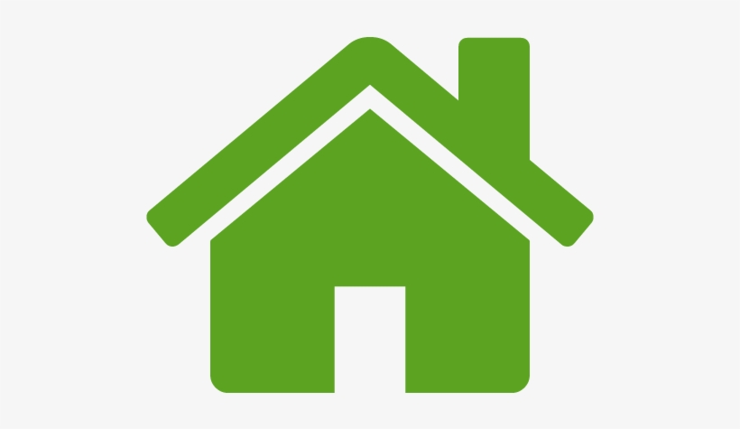

Sân bóng Bách Khoa Hà Nội

Địa chỉ: A1 Lê Thanh Nghị, Bách Khoa, Hai Bà Trưng, Hà Nội


Sân bóng Bách Khoa Hà Nội là một trong những sân có quy mô lớn nhất ở khu vực Hai Bà Trưng, gồm 4 sân bóng 7 người với kích thước lớn 30 x 50m, ghép thành 1 sân 11 người. .
THÔNG TIN CHI TIẾT- Giới thiệu chung: Sân vận động Bách Khoa được xem là tổ hơp sân hiện đại và đẳng cấp. Mặt sân được đầu tư với cỏ đẹp, mềm mại, không trơn tượt. Hệ thống luới đèn, bảng hiệu tỷ số rất hiện đại.
BẢNG GIÁ| Giá thuê sân 11 người | 6h00 - 9h00 | 100k/giờ |
|---|---|
| 9h00 - 12h00 | 200k/giờ |
| 12h00 - 17h00 | 150k/giờ | 17h00 - 21h00 | 200k/giờ |
| 21h00 - 23h00 | 100k/giờ |
- Đồ hỗ trợ bóng đá: Có cho thuê hầu hết các dụng cụ bóng đá cần thiết như : Giầy, bóng, lót chân…
Tại sao nên chọn sân bóng này?- Cho thuê giày đá bóng, thuê bóng đá
- Lưới chắn bóng đều đẹp và đồng bộ
- Có khu dịch vụ căng tin